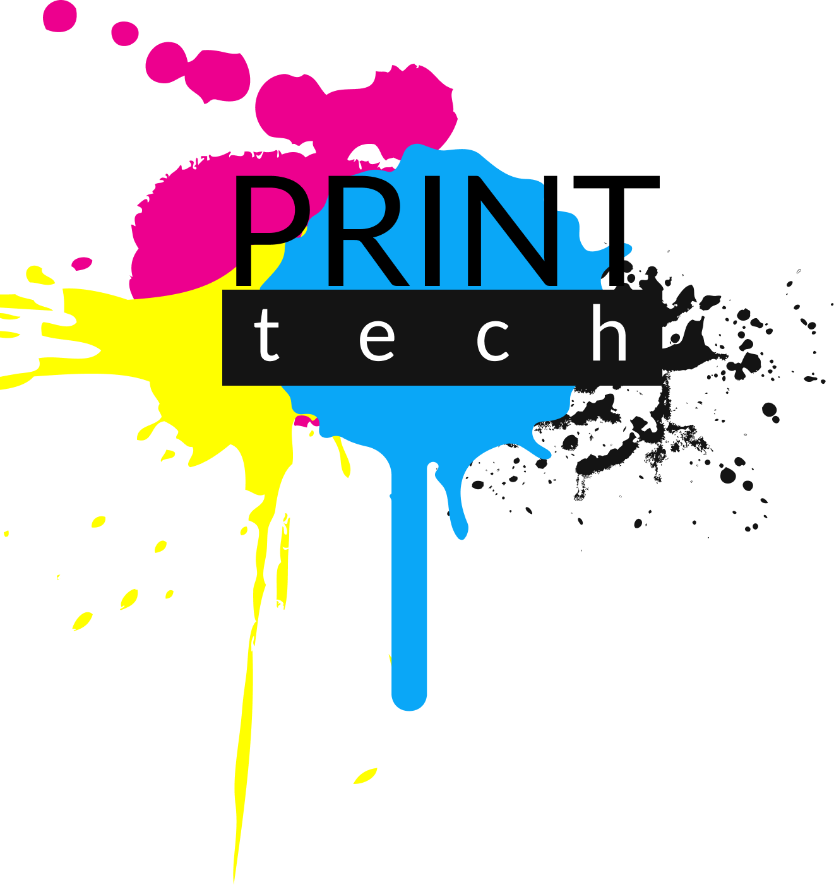

Мы сможем заправить картриджи
всех популярных производителей
Звоните и мы вас приятно удивим ценой
После знакомства с нами у наших клиентов больше не бывает вопросов, у кого можно купить
принтер или другую офисную технику, а так же где можно заправить картридж в
принтер или другую офисную технику, а так же где можно заправить картридж в
Гродно
На протяжении многих лет мы наработали громадный опыт по ремонту принтеров
и заправке картриджей и можем предложить отличное качество за разумную цену.
и заправке картриджей и можем предложить отличное качество за разумную цену.
Мы ценим время наших клиентов и поэтому Заправка картриджей в Гродно осуществляется
в кратчайшие сроки (от 5 минут ) по адресу ул. Дзержинского 40 офис №1.
Мы сможем заправить картидж Canon, HP, Samsung, Brother, Xerox качественно и недорого.
Для проверки качества заправки имеется парк принтеров что позволяет устранить дефекты
печати в кратчайшие сроки и заменить неисправную деталь прямо на месте.
в кратчайшие сроки (от 5 минут ) по адресу ул. Дзержинского 40 офис №1.
Мы сможем заправить картидж Canon, HP, Samsung, Brother, Xerox качественно и недорого.
Для проверки качества заправки имеется парк принтеров что позволяет устранить дефекты
печати в кратчайшие сроки и заменить неисправную деталь прямо на месте.
Прошивка
Все чаще встречаются принтеры с защитой от заправки, как правило в картридже такого
принтера находится чип который блокирует принтер по достижении определенного количества напечатанных
страниц. После чего просит заменить картридж на новый.
Существует несколько способов решения данной проблемы:
1
Покупка нового картриджа (оригинал или китайский аналог)
2
Восстановление картриджа (заправка или recycling) с заменой чипа
3
Замена программного обеспечения принтера на модифицированное ПО, которое не блокирует
печать и не обращает внимания на чип и на его содержимое (Прошивка принтера)
Никто не хочет покупать новый картридж за 30- 50 руб. тем более что по
окончании
его ресурса принтер опять заблокируется. Менять каждый раз чип при заправке тоже
накладно 10– 20 руб. Самым бюджетным и рациональным способом снятия защиты
от заправки является
его ресурса принтер опять заблокируется. Менять каждый раз чип при заправке тоже
накладно 10– 20 руб. Самым бюджетным и рациональным способом снятия защиты
от заправки является
прошивка
принтераМы прошиваем лазерные принтеры Samsung и Xerox практически
любых моделей. База
прошивок постоянно обновляется т.к. мы поддерживаем прямую связь с разработчиками.
прошивок постоянно обновляется т.к. мы поддерживаем прямую связь с разработчиками.
Прошить принтер можно у нас в офисе, весь процесс занимает
15минут.
Принтер прошивается 1 раз и навсегда, больше он не будет
требовать замены картриджа. После прошивки картридж будет печатать до тех пор, пока не выработает
весь тонер. После чего вы можете его принести нам, и мы восстановим его до первоначального
состояния. Определить, когда заканчивается порошок вы сможете по бледной печати или светлым полосам
на бумаге.
Также мы восстанавливаем принтеры после неудачной прошивки
Ремонт
Ремонт компьютеров
Если с Вашим компьютером произошел сбой, он издает писки,
не
загружается операционная система, вы видите системные сообщения
BIOS, или ваш компьютер вовсе не включается. То скорее всего, возникли
неисправности в устройствах вашего компьютера. Которые надо
правильно определить. Наши специалисты имеют большой опыт в диагностике проблем
компьютера, и выявляют неполадки быстро и профессионально. Всё, что
вам нужно сделать при поломке компьютера это позвонить нам по нашим
телефонам и мы поможем провести диагностику, определить все
неисправные комплектующие, и произвести ремонт компьютера
загружается операционная система, вы видите системные сообщения
BIOS, или ваш компьютер вовсе не включается. То скорее всего, возникли
неисправности в устройствах вашего компьютера. Которые надо
правильно определить. Наши специалисты имеют большой опыт в диагностике проблем
компьютера, и выявляют неполадки быстро и профессионально. Всё, что
вам нужно сделать при поломке компьютера это позвонить нам по нашим
телефонам и мы поможем провести диагностику, определить все
неисправные комплектующие, и произвести ремонт компьютера
Ремонт принтеров
Ремонт принтера включает в себя следующие этапы:
- Проверка всех деталей принтера, диагностика неисправностей, в
случае необходимости – смазка, чистка, настройка основных узлов;
- Удаление из принтера чужеродных предметов, в случае необходимости;
- Непосредственное устранение неисправностей принтера, которые
вывели его из строя; - Консультация по дальнейшей эксплуатации принтера, а также и
предоставление рекомендаций относительно месячной нагрузки на
принтер после ремонта. Именно такой комплексный подход позволяет наиболее эффективно и
оперативно проводить ремонт принтера.
- Проверка всех деталей принтера, диагностика неисправностей, в
случае необходимости – смазка, чистка, настройка основных узлов;
- Удаление из принтера чужеродных предметов, в случае необходимости;
- Непосредственное устранение неисправностей принтера, которые
вывели его из строя; - Консультация по дальнейшей эксплуатации принтера, а также и
предоставление рекомендаций относительно месячной нагрузки на
принтер после ремонта. Именно такой комплексный подход позволяет наиболее эффективно и
оперативно проводить ремонт принтера.
Ремонт мониторов
Ремонт мониторов в Гродно различных марок : SAMSUNG, LG,
NEC,
VIEWSONIC, PHILIPS, BENQ, SONY, TOSHIBA, ACER и других.
В ремонт принимаем мониторы с различными дефектами . Монитор не
включается. Периодически пропадает подсветка . Нет изображения на
экране. Как правило, такие дефекты может вызывать повреждение платы блока
питания, выход из строя инвертора напряжения, выход из строя ламп
подсветки, выход из строя платы управления с процессором.
Если вы не уверены в неисправности своего аппарата вы всегда можете
сдать его на диагностику, диагностика оборудования в нашем C/Ц.
производиться бесплатно. Ремонт ЖК мониторов производиться только в сервисном центре, выезд
на дом не осуществляем. Преимущества нашей компании: бесплатная
диагностика оборудования, доступные цены, квалифицированные
мастера, короткие сроки ремонта и высокая гарантия до 6 месяцев
VIEWSONIC, PHILIPS, BENQ, SONY, TOSHIBA, ACER и других.
В ремонт принимаем мониторы с различными дефектами . Монитор не
включается. Периодически пропадает подсветка . Нет изображения на
экране. Как правило, такие дефекты может вызывать повреждение платы блока
питания, выход из строя инвертора напряжения, выход из строя ламп
подсветки, выход из строя платы управления с процессором.
Если вы не уверены в неисправности своего аппарата вы всегда можете
сдать его на диагностику, диагностика оборудования в нашем C/Ц.
производиться бесплатно. Ремонт ЖК мониторов производиться только в сервисном центре, выезд
на дом не осуществляем. Преимущества нашей компании: бесплатная
диагностика оборудования, доступные цены, квалифицированные
мастера, короткие сроки ремонта и высокая гарантия до 6 месяцев
Ремонт ноутбуков
Наш сервисный центр оказывает услуги по ремонту ноутбуков и
нэтбуков: Sony VAIO, Toshiba, Dell, HP, Asus, Lenovo, Acer, Apple Mac-Book,
MSI, Packard Bell, eMachines, Fujitsu-Siemens, LG, Samsung и других марок.
Мы выполняем ремонт любой сложности, начиная от обычной чистки
ноутбука от пыли и заканчивая заменой чипов и перепайкой мостов.
Если в ноутбук попала вода, другая жидкость, необходимо максимально
быстро отключить его, достать аккумуляторную батарею и принести в
сервисный центр. Чем быстрее это сделать, тем быстрее и менее
затратным обойдется ремонт.
В первую очередь опытные специалисты компании стараются
отремонтировать поломанную деталь, а не заменить ее. И только в том
случае, если эта деталь не подлежит ремонту, ее приходится заказать и
подождать несколько дней доставку.
нэтбуков: Sony VAIO, Toshiba, Dell, HP, Asus, Lenovo, Acer, Apple Mac-Book,
MSI, Packard Bell, eMachines, Fujitsu-Siemens, LG, Samsung и других марок.
Мы выполняем ремонт любой сложности, начиная от обычной чистки
ноутбука от пыли и заканчивая заменой чипов и перепайкой мостов.
Если в ноутбук попала вода, другая жидкость, необходимо максимально
быстро отключить его, достать аккумуляторную батарею и принести в
сервисный центр. Чем быстрее это сделать, тем быстрее и менее
затратным обойдется ремонт.
В первую очередь опытные специалисты компании стараются
отремонтировать поломанную деталь, а не заменить ее. И только в том
случае, если эта деталь не подлежит ремонту, ее приходится заказать и
подождать несколько дней доставку.
Продажа
Если Вас интересуют картриджи для принтера, то обратившись к нам, вы найдете
широкий модельный ряд, представленный только качественной продукцией, имеющей
высокие эксплуатационные характеристики. Среди наименований товара Вы можете
увидеть как картридж для струйных принтеров, так и для лазерных принтеров, среди
которых вы найдете оригинальные и совместимые картриджи
широкий модельный ряд, представленный только качественной продукцией, имеющей
высокие эксплуатационные характеристики. Среди наименований товара Вы можете
увидеть как картридж для струйных принтеров, так и для лазерных принтеров, среди
которых вы найдете оригинальные и совместимые картриджи
Вашему вниманию предлагаются картриджи следующих вендоров: картридж Canon, HP,
Epson, Samsung, Lexmark, Xerox, Brother, Sharp, Panasonic. Эти знаменитые бренды уже
успели заявить себя во всем мире, как самые качественные производители не только
оргтехники, но и расходных материалов. Поэтому, какой бы картридж вы бы ни выбрали,
каждый из них будет исправно функционировать долгое время и безукоризненно выполнять
все свои функции. Такая продукция доступна любому желающему и широко используется в
настоящий момент и в офисах, и в домашних условиях. Поэтому профессиональное качество
печати обеспечено всем!
Epson, Samsung, Lexmark, Xerox, Brother, Sharp, Panasonic. Эти знаменитые бренды уже
успели заявить себя во всем мире, как самые качественные производители не только
оргтехники, но и расходных материалов. Поэтому, какой бы картридж вы бы ни выбрали,
каждый из них будет исправно функционировать долгое время и безукоризненно выполнять
все свои функции. Такая продукция доступна любому желающему и широко используется в
настоящий момент и в офисах, и в домашних условиях. Поэтому профессиональное качество
печати обеспечено всем!
Для того чтобы оргтехника работала бесперебойно и служила вам долго следует
приобретать только самые качественные картриджи. У нас самый большой их
ассортимент, и не зависимо от того, какой у вас тип принтера, вы всегда найдете тот,
который вам необходим. Купить картриджи в Гродно предлагают вам в самых
различных компаниях, однако наша фирма работает под девизом «Лучшее качество
по лучшей цене», поэтому вы можете быть уверены в покупке товаров у нас!
приобретать только самые качественные картриджи. У нас самый большой их
ассортимент, и не зависимо от того, какой у вас тип принтера, вы всегда найдете тот,
который вам необходим. Купить картриджи в Гродно предлагают вам в самых
различных компаниях, однако наша фирма работает под девизом «Лучшее качество
по лучшей цене», поэтому вы можете быть уверены в покупке товаров у нас!
Мы предоставляем вам возможность также приобрести оригинальные модели, которые, как
известно, имеют очень высокое качество, высочайшие технические и эксплуатационные
характеристики и, соответственно, они значительно обходят по цветопередаче любой другой
вид печати на принтерах. Оригинальные картриджи HP и Samsung, также как и картриджи
Epson и Canon, и др. имеют уникальную формулу тонера, чернил и фотобарабана, которые и
обеспечивают высокое качество и долговечность использования после их приобретения. При
желании можно приобрести также совместимый картридж по низкой цене, вам нужно лишь
заказать его у нас и мы оперативно доставим нужную модель в любое удобное для вас время.
Мы заботимся и ценим наших клиентов!
известно, имеют очень высокое качество, высочайшие технические и эксплуатационные
характеристики и, соответственно, они значительно обходят по цветопередаче любой другой
вид печати на принтерах. Оригинальные картриджи HP и Samsung, также как и картриджи
Epson и Canon, и др. имеют уникальную формулу тонера, чернил и фотобарабана, которые и
обеспечивают высокое качество и долговечность использования после их приобретения. При
желании можно приобрести также совместимый картридж по низкой цене, вам нужно лишь
заказать его у нас и мы оперативно доставим нужную модель в любое удобное для вас время.
Мы заботимся и ценим наших клиентов!
Купить картридж вы сможете, предварительно проконсультировавшись у нашего
специалиста, а также он поможет выбрать подходящий и оптимальный для вас вариант,
ответит на все интересующие вопросы. Приобретая такую продукцию у нас, вы получите не
только гарантированную надежность, качественность, высокую производительность,
экономичность, но и возможность воплощения любой вашей идеи на бумаге, причем в ярких,
насыщенных и точных тонах.
специалиста, а также он поможет выбрать подходящий и оптимальный для вас вариант,
ответит на все интересующие вопросы. Приобретая такую продукцию у нас, вы получите не
только гарантированную надежность, качественность, высокую производительность,
экономичность, но и возможность воплощения любой вашей идеи на бумаге, причем в ярких,
насыщенных и точных тонах.
Вы можете найти нас по адресу:
г. Гродно, ул.Дзержинского 40, помещение 01 цокольного этажа
Наши телефоны: